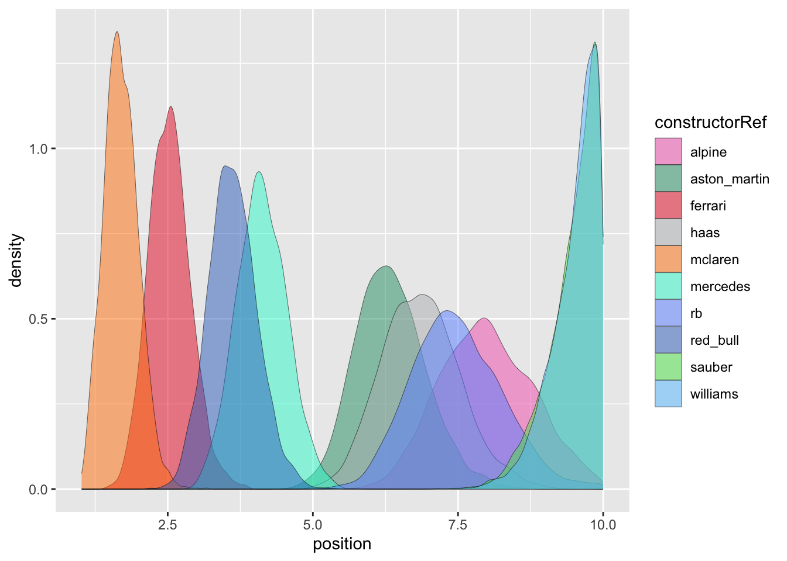
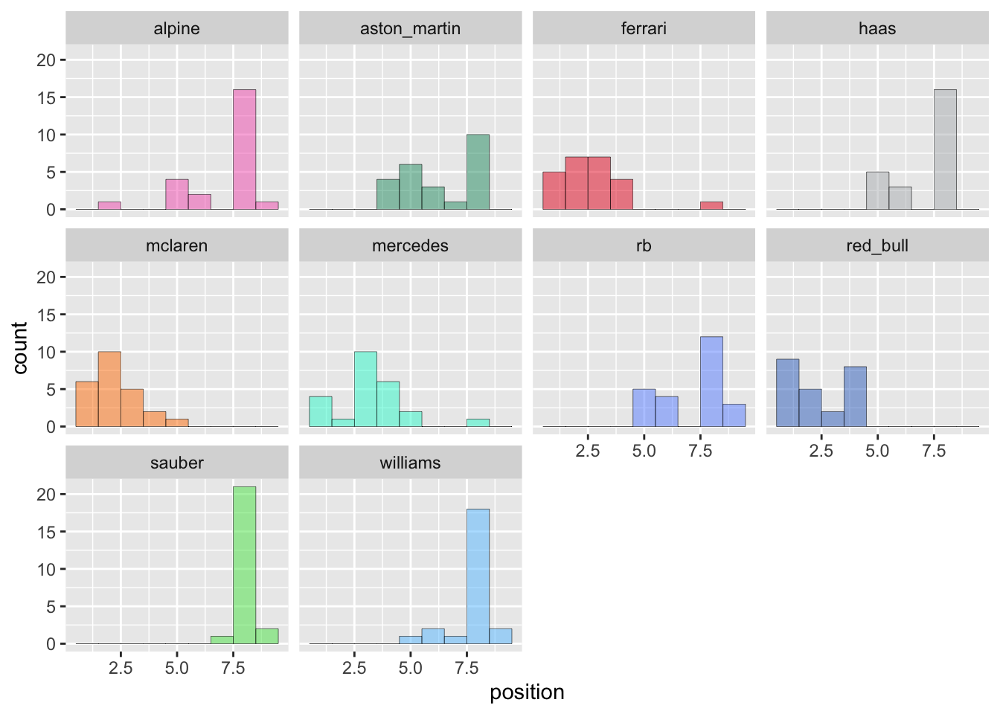
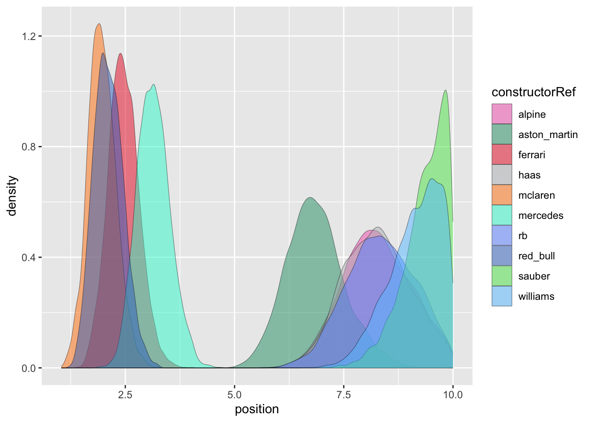
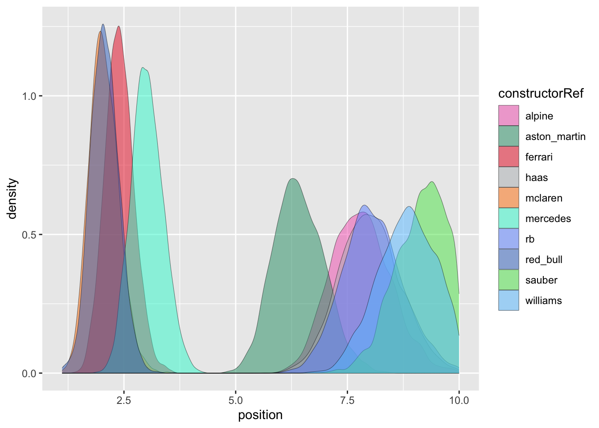

library(tidyverse)
qualifying <- read_csv("data/qualifying.csv") |> rename(quali_position = position)
races <- read_csv("data/races.csv") |>
select(raceId, year, round, circuitId, name) |>
rename(gp = name)
results <- read_csv("data/results.csv") |> select(resultId, raceId, driverId, constructorId, grid, position, points, milliseconds)
constructors <- read_csv("data/constructors.csv") |> select(constructorId, constructorRef)
drivers <- read_csv("data/drivers.csv") |> select(driverId, driverRef)
f1data <- races |>
merge(results) |>
merge(qualifying) |>
merge(constructors) |>
merge(drivers) |>
select(raceId, gp, year, round, constructorRef, driverRef, q1, q2, q3, quali_position, grid, position) |>
mutate(position = ifelse(position == "\\N", NA, as.numeric(position)))For a bit of fun, let’s try and model the performance of F1 drivers and constructors using Bayesian models. This is of course using data from the fantastic Ergast.
My model will be an imitation of the f1-metrics model. We have latent variables of driver skill and car quality, which predict points/positions. However I never did get hold of the paper for that, and am instead following the amazing Rasmus Bååth’s blog where he models the latent skill of football teams in La Liga.
I downloaded the CSVs from Ergast which we’ll first wrangle into shape. The weapon of choice is R and the tidyverse, since nothing else is quite so ergonomic for this type of analysis.
In the interests of being educational - and because Lord knows I hate editing - I am writing this post as I go, including any blind-alleys and debugging.
f2024 <- f1data |> filter(year == 2024)
ggplot(f2024) +
aes(x = position) +
facet_wrap(vars(driverRef)) +
geom_histogram(fill = "dodgerblue4", alpha = 0.5, colour = "black", linewidth = 0.1, binwidth = 1)
ggplot(f2024) +
aes(x = position) +
facet_wrap(vars(constructorRef)) +
geom_histogram(fill = "dodgerblue4", alpha = 0.5, colour = "black", linewidth = 0.1, binwidth = 1)

The model goes like this. Points are simulated as a draw from a Poisson distribution parameterised by the driver performance and constructor performance.
\[ \text{points} \sim \text{Poisson}(\text{perf}_{\text{drv}} + \text{perf}_{\text{ctr}}) \]
Driver performance is simulated as a draw from a normal distribution.
\[ \text{perf}_{\text{drv}} \sim \text{Normal}(\mu_{\text{drv}}, \sigma_{\text{drv}}^2) \]
Likewise constructor performance is simulated as a draw from a normal distribution.
\[ \text{perf}_{\text{ctr}} \sim \text{Normal}(\mu_{\text{ctr}}, \sigma_{\text{ctr}}^2) \]
We will therefore have a likelihood function that is the product of the Poisson density of the points for each driver for each race. The number of parameters is very high, as a performance score for each driver and for each constructor.
log_likelihood <- function(drv_race_pts, drv_perf, ctr_perf) {
... # whew
}Constructor performance
Let’s start simpler, with a view of just the constructor performance. Assume that at least one driver for every constructor maximised the car’s performance each weekend. THIS ISN’T TRUE. If Albon had a poor weekend, Sargeant wasn’t going to step up, as one of many examples on the grid in 2024. However it is a useful approximation that let’s us analyse just the constructor performance.
ctr_positions <- f2024 |>
group_by(round, constructorRef) |>
summarise(quali_position = min(quali_position), position = min(position)) |>
mutate(
# re-rank
quali_position = rank(quali_position),
position = rank(position)
) |>
arrange(round, position)
ggplot(ctr_positions) +
aes(x = position) +
facet_wrap(vars(constructorRef)) +
geom_histogram(fill = "dodgerblue4", alpha = 0.5, colour = "black", linewidth = 0.1, binwidth = 1)
A key point here is that we’ve recalculated positions using only the max driver’s position for each constructor, i.e. there are now only 10 finishing positions.
Again we can simulate the position \(p\) as a draw from a Poisson distribution, this time where \(\lambda_\text{ctr}\) is the performance of the constructor only.
\[ p \sim \text{Poisson}(\lambda_{\text{ctr}}) \]
To keep things simple, let’s start with an uninformative prior, a uniform distribution for the performance of the constructors.
\[ \lambda_{ctr} \sim \text{Uniform}(1, 10) \]
Then our likelihood function is much simpler. (We won’t actually need this, but I find it useful to write out for the sake of understanding.)
log_lik_ctr <- function(ctr_positions, ctr_perfs) {
ctrs <- sort(unique(ctr_positions$constructorRef))
log_lik <- 1.0
for (i in 1:length(ctrs)) {
race_posns <- filter(ctr_positions, constructorRef == ctrs[i])$position
log_lik <- log_lik + sum(dpois(race_posns, lambda = ctr_perfs[i], log = TRUE))
}
log_lik
}Let’s throw Stan at this now. Here’s our Stan model file.
data {
int<lower=1> n_ctrs;
int<lower=1> n_obs;
array[n_obs] int<lower=1, upper=10> ctrs;
array[n_obs] int<lower=1, upper=10> positions;
}
parameters {
array[n_ctrs] real<lower=1, upper=10> lambda;
}
model {
lambda ~ uniform(1, 10);
positions ~ normal(lambda[ctrs], 1) T[1, 10];
// the above "distribution" syntax is equivalent to:
//target += uniform_lpdf(lambda | 1, 10);
//target += poisson_lpmf(positions | lambda[ctrs]);
}
And here’s the R code for interacting with it via CmdStanR. I settled on CmdStanR rather than RStan after hitting too many nameless runtime errors through RStan - see here.
library(cmdstanr, quietly = TRUE)
check_cmdstan_toolchain(fix = TRUE, quiet = TRUE)
ctrs <- sort(unique(ctr_positions$constructorRef))
ctr_index <- tibble(
constructorId = 1:length(ctrs),
constructorRef = ctrs,
)
make_data_list <- function(ctr_positions) {
tidy_ctr_posns <- ctr_positions |> merge(ctr_index)
data_list <- list(
n_ctrs = n_distinct(tidy_ctr_posns$constructorId),
n_obs = nrow(tidy_ctr_posns),
ctrs = tidy_ctr_posns$constructorId,
positions = tidy_ctr_posns$position
)
}
run_stan <- function(data_list, model_file = "f1.stan") {
mod <- cmdstan_model(model_file, exe_file = str_c(model_file, ".bin"))
mod$sample(data_list, seed = 42, show_messages = FALSE)
}
fit <- run_stan(make_data_list(ctr_positions))
fit variable mean median sd mad q5 q95 rhat ess_bulk ess_tail
lp__ -442.52 -442.14 2.49 2.36 -446.98 -439.30 1.00 1479 1643
lambda[1] 6.96 6.96 0.21 0.21 6.62 7.31 1.00 5324 2569
lambda[2] 5.96 5.96 0.21 0.20 5.62 6.30 1.00 5057 3034
lambda[3] 2.58 2.58 0.23 0.22 2.19 2.95 1.00 5412 2691
lambda[4] 6.30 6.30 0.20 0.21 5.96 6.63 1.00 5415 3023
lambda[5] 1.56 1.56 0.26 0.27 1.12 2.00 1.00 2065 881
lambda[6] 4.12 4.12 0.21 0.21 3.78 4.46 1.00 4308 2376
lambda[7] 6.67 6.67 0.21 0.21 6.33 7.00 1.00 5155 2869
lambda[8] 3.66 3.66 0.21 0.22 3.31 4.01 1.00 5749 2972
lambda[9] 8.37 8.37 0.23 0.23 8.00 8.75 1.00 5142 2577
# showing 10 of 11 rows (change via 'max_rows' argument or 'cmdstanr_max_rows' option)Let’s tidy that up though, mapping parameters back to constructor names.
sample_posterior <- function(fit) {
df <- fit$draws("lambda", format = "draws_matrix") |> as_tibble()
colnames(df) <- ctrs
df |>
pivot_longer(
all_of(ctrs),
names_to = "constructorRef", values_to = "position"
) |>
mutate(position = as.double(position))
}
plot_posterior <- function(fit) {
ggplot(sample_posterior(fit)) +
aes(x = position) +
facet_wrap(vars(constructorRef)) +
geom_density(fill = "dodgerblue4", alpha = 0.5, colour = "black", linewidth = 0.1)
}
plot_posterior(fit)

The interesting thing is that this suggests the Red Bull was clearly the third-fastest car. I’m a little suspicious of that, because it claimed a sequence of 1-2s in the first third of the season. Let’s take a closer look at that.
The first thing to check is whether my dumb “max driver, 10 positions” model is problematic. Let’s look at Red Bull’s results.
f2024 |>
filter(constructorRef == "red_bull") |>
select(gp, round, driverRef, position) |>
pivot_wider(names_from = "driverRef", values_from = "position") |>
arrange(round) |>
merge(
ctr_positions |> filter(constructorRef == "red_bull") |> select(round, position)
) |>
knitr::kable()| round | gp | perez | max_verstappen | position |
|---|---|---|---|---|
| 1 | Bahrain Grand Prix | 2 | 1 | 1 |
| 2 | Saudi Arabian Grand Prix | 2 | 1 | 1 |
| 3 | Australian Grand Prix | 5 | NA | 10 |
| 4 | Japanese Grand Prix | 2 | 1 | 1 |
| 5 | Chinese Grand Prix | 3 | 1 | 1 |
| 6 | Miami Grand Prix | 4 | 2 | 2 |
| 7 | Emilia Romagna Grand Prix | 8 | 1 | 1 |
| 8 | Monaco Grand Prix | NA | 6 | 10 |
| 9 | Canadian Grand Prix | NA | 1 | 9 |
| 10 | Spanish Grand Prix | 8 | 1 | 1 |
| 11 | Austrian Grand Prix | 7 | 5 | 4 |
| 12 | British Grand Prix | 17 | 2 | 1 |
| 13 | Hungarian Grand Prix | 7 | 5 | 4 |
| 14 | Belgian Grand Prix | 7 | 4 | 3 |
| 15 | Dutch Grand Prix | 6 | 2 | 2 |
| 16 | Italian Grand Prix | 8 | 6 | 4 |
| 17 | Azerbaijan Grand Prix | 17 | 5 | 4 |
| 18 | Singapore Grand Prix | 10 | 2 | 2 |
| 19 | United States Grand Prix | 7 | 3 | 2 |
| 20 | Mexico City Grand Prix | 17 | 6 | 4 |
| 21 | São Paulo Grand Prix | 11 | 1 | 1 |
| 22 | Las Vegas Grand Prix | 10 | 5 | 3 |
| 23 | Qatar Grand Prix | NA | 1 | 9 |
| 24 | Abu Dhabi Grand Prix | NA | 6 | 8 |
Round three is clearly a balls-up: how can Pere’z 5th place become the 10th constructor position? Let’s work through it again.
f2024 |>
group_by(round, constructorRef) |>
summarise(position = min(position)) |>
mutate(reranked = rank(position)) |>
filter(round == 3) |>
knitr::kable()| round | constructorRef | position | reranked |
|---|---|---|---|
| 3 | alpine | 13 | 7 |
| 3 | aston_martin | 6 | 3 |
| 3 | ferrari | 1 | 1 |
| 3 | haas | 9 | 5 |
| 3 | mclaren | 3 | 2 |
| 3 | mercedes | NA | 9 |
| 3 | rb | 7 | 4 |
| 3 | red_bull | NA | 10 |
| 3 | sauber | 14 | 8 |
| 3 | williams | 11 | 6 |
NA strikes again! Forgot to add the crucial na.rm parameter to the min. Right, a do-over.
ctr_positions <- f2024 |>
group_by(round, constructorRef) |>
summarise(
# in the event of a double DNF, assign the last position
quali_position = pmin(min(quali_position, na.rm = TRUE), 10),
position = pmin(min(position, na.rm = TRUE), 10)
) |>
mutate(
# re-rank
quali_position = rank(quali_position),
position = rank(position)
) |>
arrange(round, position)
ggplot(ctr_positions) +
aes(x = position) +
facet_wrap(vars(constructorRef)) +
geom_histogram(fill = "dodgerblue4", alpha = 0.5, colour = "black", linewidth = 0.1, binwidth = 1)

That looks more like I’d expect. Let’s try Stan again.
fit <- run_stan(make_data_list(ctr_positions))
plot_posterior(fit)

That is more intuitive: Red Bull is now much closer to McLaren and marginally ahead of Ferrari (despite coming third in the constructor’s championship). This tells us that yes, Verstappen probably would have won the driver’s championship in a McLaren - but contrary to claims, not in a Ferrari, since it wasn’t faster than the Red Bull overall.
There’s a lot we can improve about this model:
- Our priors for constructor performance are uniformative, and so our posteriors basically just reflect the data. Can we add some useful information to inform the model?
- The cars were regularly upgraded throughout the season, and received “big” updates at some races. There were also some key events like Newey leaving Red Bull. Can we model this?
More informative priors
What makes some constructors better than others? Adrian Newey Money. Let’s reflect this in our priors.
\[ \lambda_{\text{ctr}} \sim \text{Normal}(\text{budget}_\text{ctr}, \sigma) \]
Budget data
This is a bit of a secret, so we have to estimate. We do know that the budget cap is 135M USD and it’s unlikely that anyone is operating below the cap. We also know that driver and top executive salaries are exempt from the cap. The top teams are spending about 100M USD on their drivers, and prior to the budget cap’s implementation likely invested in facilities that they can use for free (like wind tunnels).
With that in mind, I asked 4o to search the web and estimate budgets for the teams. I sanity checked against this Blackbook Motorsport article.
These are probably reasonable estimates, and if we put a reasonable variance on the priors it will reflect the uncertainty.
budgets <- tribble(
~constructorRef, ~budget,
"red_bull", 400,
"mercedes", 400,
"ferrari", 400,
"mclaren", 250,
"aston_martin", 250,
"alpine", 200,
"rb", 150,
"haas", 150,
"williams", 150,
"sauber", 150
) |>
mutate(
norm_budget = 1 - budget / max(budget)
)
knitr::kable(budgets)| constructorRef | budget | norm_budget |
|---|---|---|
| red_bull | 400 | 0.000 |
| mercedes | 400 | 0.000 |
| ferrari | 400 | 0.000 |
| mclaren | 250 | 0.375 |
| aston_martin | 250 | 0.375 |
| alpine | 200 | 0.500 |
| rb | 150 | 0.625 |
| haas | 150 | 0.625 |
| williams | 150 | 0.625 |
| sauber | 150 | 0.625 |
Let’s update our model and run Stan again.
data {
int<lower=1> n_ctrs;
int<lower=1> n_obs;
array[n_ctrs] int ctr_budgets;
real<lower=0> ctr_budget_sd;
array[n_obs] int<lower=1, upper=10> ctrs;
array[n_obs] int<lower=1, upper=10> positions;
}
parameters {
array[n_ctrs] real<lower=1, upper=10> lambda;
}
model {
lambda ~ normal(ctr_budgets, ctr_budget_sd);
positions ~ normal(lambda[ctrs], 1) T[1, 10];
}
data_list_b <- make_data_list(ctr_positions)
data_list_b$ctr_budgets <- 10 * arrange(budgets, constructorRef)$norm_budget
data_list_b$ctr_budget_sd <- 1.5
fit.b <- run_stan(data_list_b, model_file = "f1.b.stan")
plot_posterior(fit.b)

This hasn’t made much difference. McLaren has eased back towards Red Bull because their budget is smaller. You could say they did a lot better than Red Bull relative to their budget.
sp <- sample_posterior(fit.b)
sp |>
group_by(constructorRef) |>
summarise(mu = mean(position), sigma = sd(position)) |>
arrange(mu) |>
knitr::kable()| constructorRef | mu | sigma |
|---|---|---|
| mclaren | 1.953993 | 0.2508664 |
| red_bull | 2.058912 | 0.2584320 |
| ferrari | 2.469770 | 0.2310382 |
| mercedes | 3.146093 | 0.2072577 |
| aston_martin | 6.232057 | 0.1974960 |
| alpine | 7.094156 | 0.2121044 |
| haas | 7.110799 | 0.1993153 |
| rb | 7.152165 | 0.2054361 |
| williams | 7.755385 | 0.2113910 |
| sauber | 8.071865 | 0.2184111 |
This model suggests there’s very little nothing in it between Red Bull and McLaren, though the posterior distribution is wider for the top three teams than the others so there is more uncertainty.
Was budget a bad choice for the prior? Not necessarily: this model of constructor performance incorporates an important factor that isn’t clear from the results, but which should affect an objective assessment of which teams are better. Or to put it another way, if I were Max Verstappen I’d still rather be driving the Red Bull than the McLaren next year, because Red Bull’s budget suggests a more capable team overall. (Not to mention the increased wind tunnel time that third place in the constructors’ gets relative to the winner.)
plot_posterior_with_prior <- function(ctrs, ctr_budgets, ctr_budget_sd, fit) {
s_post <- sample_posterior(fit) |> mutate(sample = "posterior")
ctr_index <- tibble(constructorRef = ctrs, constructorId = 1:length(ctrs))
s_prior <- ctr_budgets |>
lapply(\(mu) rnorm(100000, mu, ctr_budget_sd)) |>
lapply(as_tibble) |>
imap(\(t, i) mutate(t, constructorId = i, sample = "prior")) |>
bind_rows() |>
rename(position = value) |>
merge(ctr_index)
df <- bind_rows(s_prior, s_post)
ggplot(df) +
aes(x = position, fill = sample) +
facet_wrap(vars(constructorRef)) +
geom_density(alpha = 0.5, colour = "black", linewidth = 0.1) +
scale_x_continuous(breaks=seq(1, 10, by=2), limits=c(1, 10))
}
plot_posterior_with_prior(ctrs, data_list_b$ctr_budgets, data_list_b$ctr_budget_sd, fit.b)
Plotting the priors and posteriors together shows how McLaren over-performed and Mercedes continued to underperform.